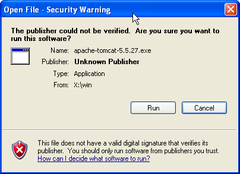

[Documentation Home]
[Installation Home]
Alphalinc Software Development Environment (ASDE) - Apache Tomcat 5.5.x or 6.0.x installation
The following screens are related to the Tomcat 5.5.x install procedure, but there are almost no
differences compared to the Tomcat 6.0.x procedure.
- Go to \\loira\Softwares\Desenvolvimento\Java\Tomcat
(or download it from http://tomcat.apache.org) and copy the
apache-tomcat-X-X-XX.exe file to your computer. Remember that projects using Caché 5 (e.g.
SES-DF) should use a Tomcat 5 version, and projects using Caché 2008 or Ensemble (e.g. TCI and SESAU)
should use a Tomcat 6 version.
|
Figure 1 - Software download
|
- After copying it, double click on the installer to start installation. The
name of the file will be something like apache-tomcat-5.5.X.exe, where X is the current version
number for this branch. If Windows complains about the publisher of the file, just click on Run.
|

Figure 2 - It is ok to install software from the Apache Foundation
|
- When the installation wizard is shown, just follow instructions and accept the default options.
|
Figure 3 - Choose destination directory
|
- When the wizard asks for the installation directory, take note of the complete path
before clicking on the Next button (you can Copy the text to the clipboard with Ctrl+C).
|
Figure 4 - Take note of Tomcat's installation directory
|
- In the configurations dialog, you can leave everything with the default values. Please observe that
Tomcat's default port is 8080.
|
Figure 5 - Tomcat's default port is 8080
|
- In
the Java virtual machine path selection dialog, just accept the path
suggested by the wizard. If nothing comes up in the field, look for the
JAVA_HOME (Tomcat needs Java, so you must have installed Java before installing Tomcat) path.
|
Figure 6 - Tomcat finds out the path for Java's virtual machine
|
- When installation is finished, the wizard will start Tomcat as a service in Windows. When
it is running, Tomcat displays a green arrow in the system tray icon.
|
Figure 7 - Tomcat is working
|
This document is the file projectDirectory/Implementation/docs/installation/tomcat-installation.html
Please feel free to make corrections and commit it to the repository.